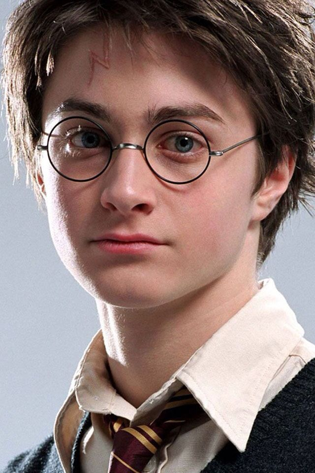
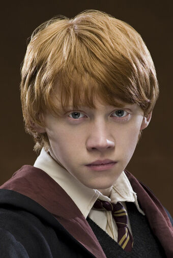

Harry Potter é aluno da Grifinória, órfão após Aquele-que-não-deve-ser-nomeado matá-los cruelmente quando ele ainda era um bebê. Viveu sua infância na casa de seus tios, que abominavam toda forma de magia e que esconderam sua verdadeira história, inclusive de ser um bruxo.
Hermione Granger, a aluna mais inteligente do seu ano (e talvez dos outros também), pertencente a Grifinória, filha de pais trouxas. Iniciou sua grande amizade com Harry e Rony após enfrentar um trasgo sozinha no seu primeiro ano na escola. Possui uma paixão secreta por Rony Weasley.
Ronald Weasley, apelidado Rony, pertencente a Grifinória, veio de uma grande linhagem de bruxos, tendo 6 irmãos, todos estudaram em Hogwarts. Melhor amigo de Harry desde o primeiro dia, o ajudou a embarcar na plataforma e enfrentar um trasgo para salvar Hermione no primeiro ano.
